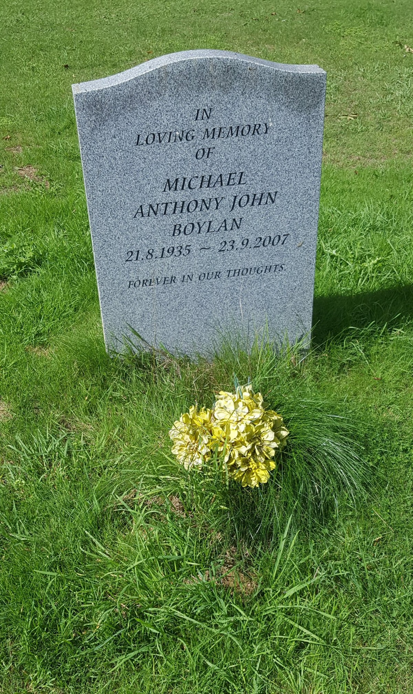
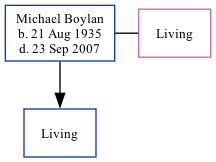

Michael Anthony John Boylan 1935 - 2007
[ Home ] | [ Calendar ] | [ Surnames Index ] | [ Family History ]Michael Boylan, the husband of Patricia B Horne (the second cousin on the father's side of Nigel Horne), was born in Kingsclere, Hampshire, England on Aug 21, 1935<span class="citation">1,2</span> and. He married Patricia (with whom he had 1 surviving child) in Ashford, Kent, England around May 1962<span class="citation">4</span>. On Sep 29, 1939, he lived in Westwell, Kent<span class="citation">1</span>. <p>He died on Sep 23, 2007<span class="citation">3</span> and was buried in Westwell, Kent after Sep 23, 2007.
Citations
- 1939 Register - Findmypast (was the son of the head of the household)
- England & Wales births 1837-2006 - Findmypast
- England & Wales Government Probate Death Index 1858-2019 - Findmypast
- England & Wales marriages 1837-2008 - Findmypast
Media
Michael Boylan - gravestone

England & Wales marriages 1837-2008 - BMD/M/1962/2/AZ/000103/095
1939 Register Transcription - TNA-R39-1863-1863F-006-29
England & Wales Births 1837-2006 - BMD-B-1935-4-AZ-000107-017
England & Wales Government Probate Death Index 1858-2019 - GBOR/GOVPROBATE/B/2007-2008/00013574
Family Tree
Generated by Ged2Site. Last updated on Jul 20, 2025